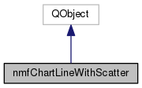

The class creates a line chart with an overlayed scatter diagram. The user can specify multiple lines worth of data for display. More...
#include <nmfChartLineWithScatter.h>
Inheritance diagram for nmfChartLineWithScatter:

Collaboration diagram for nmfChartLineWithScatter:

Public Slots | |
| void | callback_hoveredLegendMarker (bool hovered) |
| Callback invoked if the user hovers over a plot marker. More... | |
| void | callback_hoveredLine (const QPointF &point, bool hovered) |
| Callback invoked if user hovers over a line. More... | |
| void | callback_hoveredScatter (const QPointF &point, bool hovered) |
| Callback invoked if user hovers over a scatter point. More... | |
| void | callback_hideTooltip () |
| Callback invoked to hide tooltip after a single shot timeout. | |
Public Member Functions | |
| nmfChartLineWithScatter () | |
| nmfChartLineWithScatter constructor for multi-line chart with overlayed scatter diagram | |
| void | populateChart (QChart *chart, std::string &type, const std::string &lineStyle, const int &dataLineWidth, const int &dataPointWidth, const bool &isMohnsRho, const bool &showFirstPoint, const bool &addScatter, const int &xOffset, const bool &xAxisApplyNiceNumbers, const bool &xAxisIsInteger, const double &yMin, const double &yMax, const boost::numeric::ublas::matrix< double > &lineData, const boost::numeric::ublas::matrix< double > &scatterData, const boost::numeric::ublas::matrix< double > &skipScatterData, const QStringList &rowLabels, const QStringList &columnLabels, std::string &mainTitle, std::string &xTitle, std::string &yTitle, const int &fontSizeLabel, const int &fontSizeNumber, const QString &labelFont, const int &axisLineWidth, const int &axisLineColor, const std::vector< bool > &gridLines, const int &theme, const QColor &dashedLineColor, const QColor &scatterColor, const std::string &lineColor, const std::string &lineColorName, const QList< QString > &multiRunLineLabels, const bool &showLegend) |
| populates (and draws) the chart with all of the data necessary More... | |
Detailed Description
The class creates a line chart with an overlayed scatter diagram. The user can specify multiple lines worth of data for display.
Member Function Documentation
◆ callback_hoveredLegendMarker
|
slot |
Callback invoked if the user hovers over a plot marker.
- Parameters
-
hovered : boolean signifying if user is hovering over a marker
◆ callback_hoveredLine
|
slot |
Callback invoked if user hovers over a line.
- Parameters
-
point : point at which hovering takes place hovered : boolean signifying if user is hovering over a line
◆ callback_hoveredScatter
|
slot |
Callback invoked if user hovers over a scatter point.
- Parameters
-
point : point at which hovering takes place hovered : boolean signifying if user is hovering over a scatter point
◆ populateChart()
| void nmfChartLineWithScatter::populateChart | ( | QChart * | chart, |
| std::string & | type, | ||
| const std::string & | lineStyle, | ||
| const int & | dataLineWidth, | ||
| const int & | dataPointWidth, | ||
| const bool & | isMohnsRho, | ||
| const bool & | showFirstPoint, | ||
| const bool & | addScatter, | ||
| const int & | xOffset, | ||
| const bool & | xAxisApplyNiceNumbers, | ||
| const bool & | xAxisIsInteger, | ||
| const double & | yMin, | ||
| const double & | yMax, | ||
| const boost::numeric::ublas::matrix< double > & | lineData, | ||
| const boost::numeric::ublas::matrix< double > & | scatterData, | ||
| const boost::numeric::ublas::matrix< double > & | skipScatterData, | ||
| const QStringList & | rowLabels, | ||
| const QStringList & | columnLabels, | ||
| std::string & | mainTitle, | ||
| std::string & | xTitle, | ||
| std::string & | yTitle, | ||
| const int & | fontSizeLabel, | ||
| const int & | fontSizeNumber, | ||
| const QString & | labelFont, | ||
| const int & | axisLineWidth, | ||
| const int & | axisLineColor, | ||
| const std::vector< bool > & | gridLines, | ||
| const int & | theme, | ||
| const QColor & | dashedLineColor, | ||
| const QColor & | scatterColor, | ||
| const std::string & | lineColor, | ||
| const std::string & | lineColorName, | ||
| const QList< QString > & | multiRunLineLabels, | ||
| const bool & | showLegend | ||
| ) |
populates (and draws) the chart with all of the data necessary
- Parameters
-
chart : pointer to QChart type : type of chart (currently unused) lineStyle : style of line(s) dataLineWidth : width of the data lines dataPointWidth : width of scatter points isMohnsRho : boolean signifying if plot is of a retrospective analysis showFirstPoint : boolean signifying if showing the first point should be shown addScatter : boolean signifying if the scatter diagram should be visible xOffset : the x offset that should be applied to the data series xAxisApplyNiceNumbers : boolean if the x-axis should be "nicely" scaled xAxisIsInteger : boolean signifying if the values along the x-axis should be integers yMin : minimum y value yMax : maximum y value lineData : matrix containing the line data scatterData : matrix containing the scatter data skipScatterData : matrix containing booleans signifying if the corresponding scatterData point should be "skipped over" (i.e., not displayed) rowLabels : labels along the x-axis columnLabels : labels along the y-axis mainTitle : the main title for the chart xTitle : the x-axis label yTitle : the y-axis label fontSizeLabel : the point size of the label titles fontSizeNumber : the point size of the axes' numeric scale values labelFont : the font of the label titles and axes values axisLineWidth : width of the x and y axes axisLineColor : value to be used for r,g,b values for axes line color gridLines : vector of booleans designating if the gridlines should be visible theme : color theme for the chart dashedLineColor : color of any dashed lines scatterColor : color of scatter points lineColor : the line color designation lineColorName : the name of the line color to be used as a tooltip multiRunLineLabels : list of line labels if there are to be more than one showLegend : boolean to specify the visibility of the legend
The documentation for this class was generated from the following files:
- nmfCharts/nmfChartLineWithScatter.h
- nmfCharts/nmfChartLineWithScatter.cpp